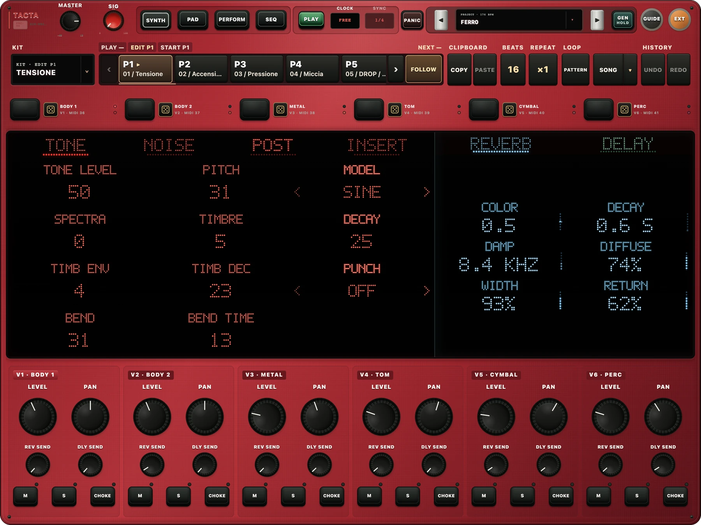
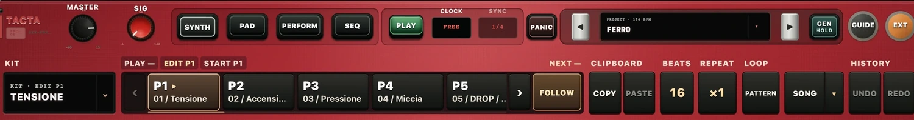
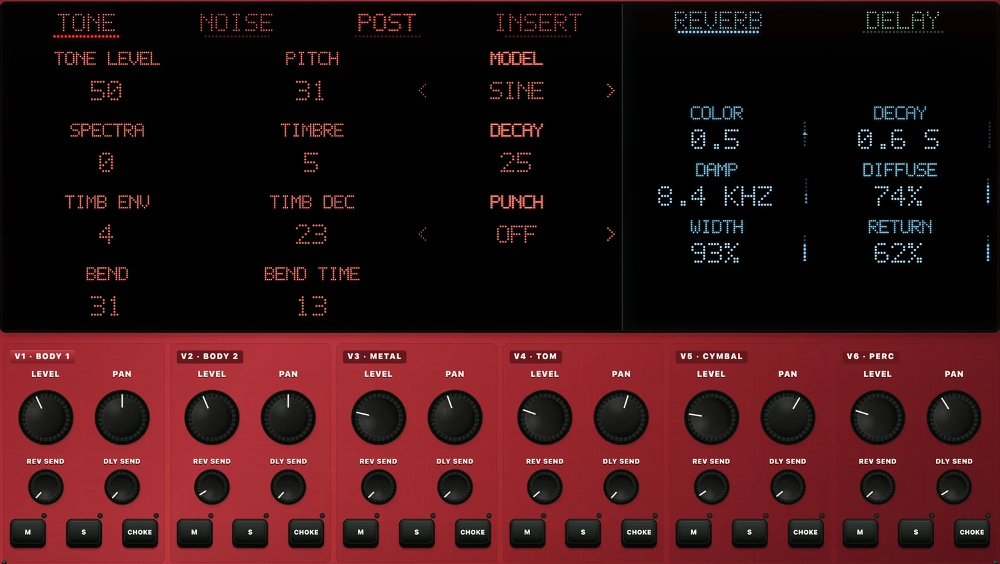
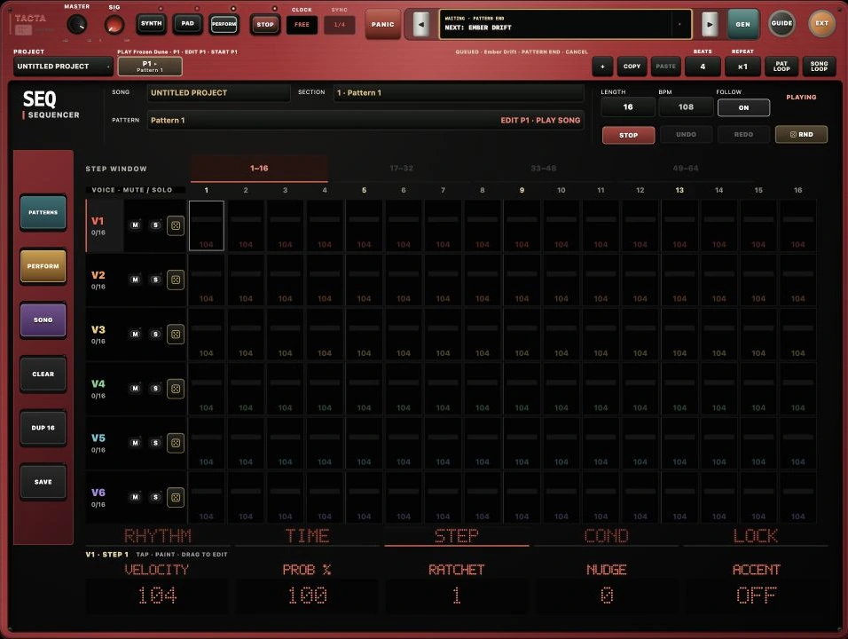
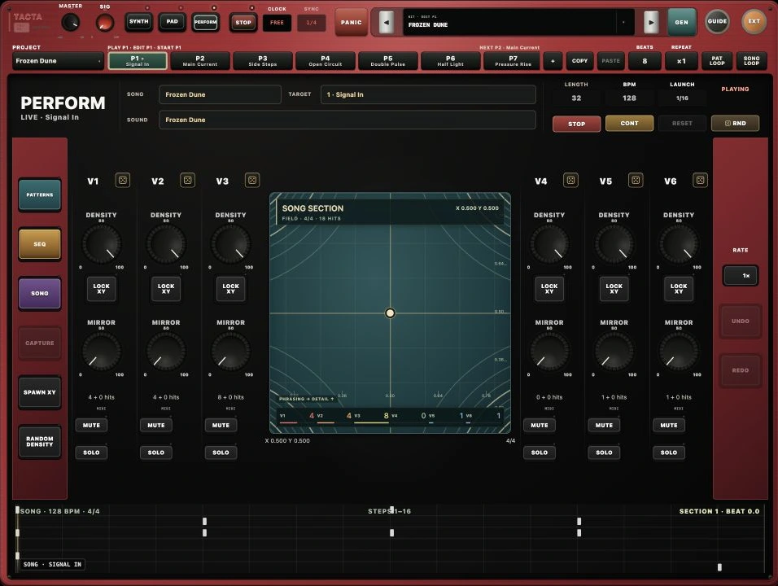
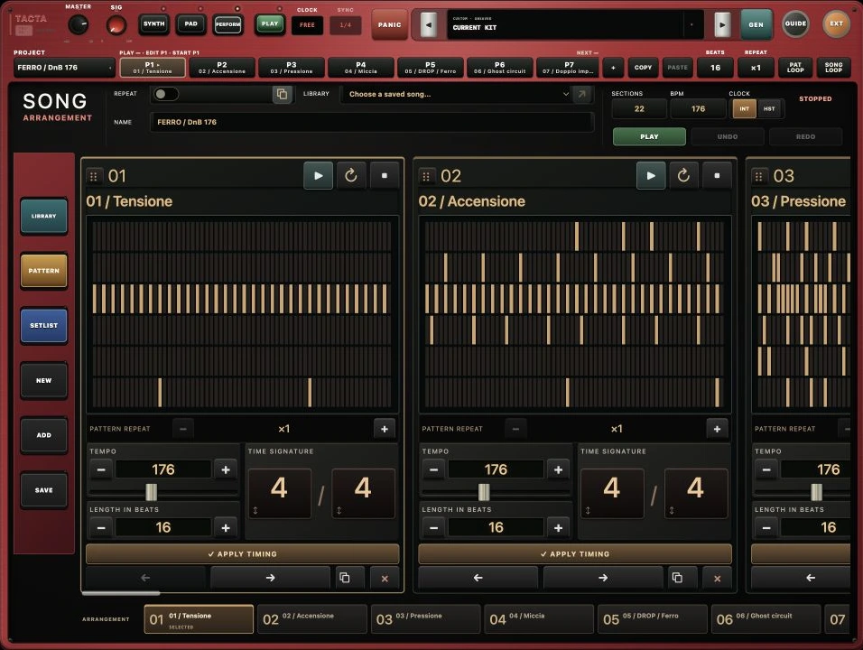
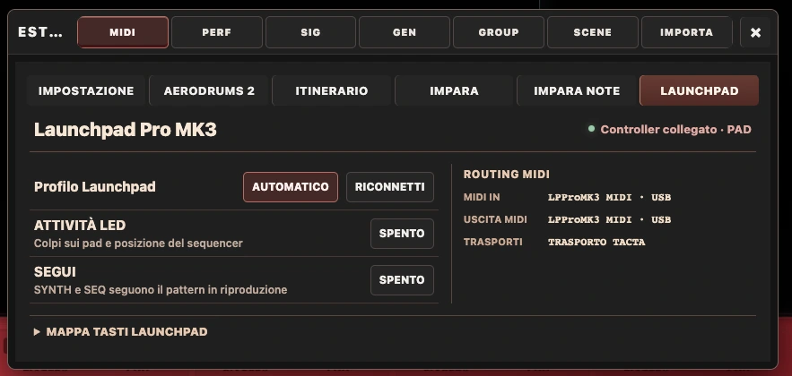

Six-voice percussion · Manual
TACTA
Build a six-voice kit, turn it into a pattern and develop it into a live performance.


Play your first pattern
Open a Project and learn how the Pattern strip separates playback from editing.


- Open FERRO
Tap the Project name in the top strip and choose FERRO.
- Press PLAY
Watch the Pattern strip. PLAY shows what you hear, EDIT shows what SYNTH and SEQ edit, and START marks the next entry point.
- Try one voice
Open PAD and tap a voice. Go to SYNTH, choose that voice and adjust DECAY to hear how it changes the hit.
- Preview a Kit
Stop playback, open the KIT display and select a Factory Kit with a groove. Use PREVIEW GROOVE to hear its rhythm and sound together.
Shape and mix the kit
Build the six percussion voices in SYNTH. Balance their level and sends, then try a performance macro or blend four Scenes.


Shape a percussion voice
Edit the selected voice on the red display. The neighboring display controls the shared REVERB and DELAY.
Select a voice. Try PITCH, MODEL, SPECTRA, TIMBRE and DECAY in TONE, then shape the noise with its filter and envelope in NOISE. Tap a voice die to vary its sound. Hold it for ranges and locks.
Use POST for CLICK, the tone/noise balance, EQ and output. INSERT adds saturation and compression. REV SEND and DLY SEND feed the shared effects. Their return controls affect all voices sent to that effect.
In SYNTH, press and hold the small black pad of the voice you want to edit. A short tap plays the voice. The panel header shows which Pattern and voice you are editing.
Under FACTORY, pick a family and a preset, then tap LOAD. To save the current voice, switch to USER, enter a name and tap SAVE. In USER you can load it into any voice.
Balance the kit
Each voice has a mixer strip with LEVEL, PAN, sends, MUTE, SOLO and CHOKE.
Balance the six voices before raising MASTER. Use PAN to place a voice left, center or right. MUTE silences one voice. SOLO isolates the selected solo voices.
Enable CHOKE on voices that should cut one another. Triggering one cuts the other enabled voices. Use MASTER for the final stereo output level.
Move several parameters with SIG
The SIG knob moves its assigned voice and shared-effect parameters together.
Open EXT → SIG and add a voice or effect parameter. Set its lower and upper response values and a curve, then turn SIG and listen to the change.
Recall a mapping from the library or save your own for later reuse.
Capture and blend sounds
SCENE blends four temporary sound snapshots with an XY pad.
Set up the sound, open EXT → SCENE and capture A. Change the sound and capture B, C and D. Recall a corner to compare its Kit.
After capturing all four corners, move the XY pad to blend them. Save a User Kit or the current Project to keep the result.
Play and record pads
Start with live pads, then record into the Pattern shown in EDIT.
Play the pads
The six pads play the six voices of the current Kit and send MIDI notes 36–41.
Open PAD and play the same voice at different heights. Y uses touch position, CENTER uses a fixed value and PRESSURE uses pressure when the device reports it. The die varies the sound on tap and opens its settings on hold.
Use EXT → PAD for velocity, X/Y targets and Repeat. Hold a pad with Repeat enabled to hear retriggers at the selected division. MIDI and SEQ have separate velocity settings.
Record to a pattern
The recording panel shows the target Pattern and the armed voices.
Open the settings beside REC. OVERDUB adds hits. REPLACE rewrites the recorded portion, including rests, for the armed voices. Drag the timing, grid and count-in controls vertically. REC aligns the saved take. PRE aligns what you hear, even in STOP. POST lets you choose the grid after finishing.
Arm REC, then start playback if stopped. In HOST, the take waits for host playback. Use Finish or Stop to complete the take. In POST, review the grid, then apply or discard. Cancel discards an active take. One UNDO reverses an applied take. Save the Project to keep it.
Edit steps and launch patterns
Use SEQ for hits, timing and locks. FOLLOW keeps the editor on the playing Pattern when enabled.


Edit rhythm and steps
SYNTH and SEQ edit the Pattern shown in EDIT. With FOLLOW lit, both track the playing Pattern in the open Project, and SEQ also follows its step window. Turn FOLLOW off to select a different Pattern while the Song plays. Turn it on to return to the playing Pattern.
Tap a cell to toggle a hit. Drag the number of steps for a voice vertically. In COMPACT, switch between DETAIL and MATRIX. RHYTHM, TIME, STEP, COND and LOCK group the editing controls.
Tap RND for a variation and hold RND or a voice die for settings. TRY is for temporary edits. Use UNDO and REDO in the header. CLEAR, DUP 16 and SAVE are in the SEQ header.
In SEQ, tap a voice label V1–V6, then open CLIP. Use COPY on Voice sound, Voice sequence (including step locks), Sound + sequence or Pattern rhythm (all six voices, keeping the destination kit). Use Complete kit to copy all six sounds, the mixer and effects. It keeps the destination rhythm.
Select the destination Pattern, opening another Project first if needed. For a voice edit, choose the destination voice in SEQ. Reopen CLIP and tap PASTE on the row you copied. UNDO reverses the paste. Use the upper strip’s COPY / PASTE for a complete Pattern with its kit.
Edit, launch and reuse patterns
Each Pattern has its own sequence and sound. The Song sets their playing order.
Swipe across the Pattern strip or use its arrows. Tap the playing Pattern to open it in SEQ. To edit another one during playback, turn FOLLOW off, then tap it. Double-tap during playback to queue a jump at the end of the current Pattern, or while stopped to set START. While the jump is queued, FOLLOW stays on the current sound until playback switches. Hold an editable Pattern for settings. Drag REPEAT vertically. Pattern Loop holds one Pattern. The arrow by Song Loop opens the range controls.
Tap + for an empty Pattern or hold it for the library. Browse by genre, BPM, meter or role. A User copy keeps the rhythm, Kit and labels without adding it to the Song. Use Full Pattern to also copy sound and locks, or Rhythm Only to keep the destination Kit. Save and export, or import straight to the library.
Vary a pattern live
Use the XY surface to change the playing rhythm and capture a variation you want to keep.


Vary the rhythm live
PERFORM follows the playing Pattern. In STOP it previews changes to the selected Pattern.
Move along X to change the phrasing and raise Y for more detail. DENSITY thins a voice and MIRROR adds quieter hits in gaps, even at the center. RANDOM DENSITY varies the six densities and SPAWN XY moves the map point. Use ANCHORS to protect selected hits and LOCK XY to fix a voice’s map position.
Enable FILL, drag the map and release to return to the base rhythm at the selected RETURN division. AUTO LOOP starts off. When enabled during playback, it repeats the sounding pattern while you drag the map or DENSITY/MIRROR, or while a live MUTE or SOLO is active. The arrangement continues at the next pattern boundary once those actions end. Use RESET for the base rhythm or CAPTURE to keep a variation. Save the Project to keep the result.
Arrange Songs and Setlists
Arrange Patterns in a Song. Build a Setlist from saved Song revisions.


Arrange a song
SONG arranges the Patterns of the open Project. Each section has its own rhythm, sound, tempo, meter and length.
Open SONG from SEQ or PERFORM. Move or duplicate sections. Set tempo, meter and length, then apply the timing. To edit a section other than the one playing, turn FOLLOW off and tap the Pattern in the strip to open SEQ.
Press PLAY to hear the arrangement. Selecting a Pattern by itself leaves playback as it is. Save the full Project. Saving a Factory Project creates a User copy.
Order songs for a set
SETLIST builds a performance from saved Songs.
Save each Song first, then add it to the Setlist. Set its repeats and choose AUTO to advance or WAIT to pause between Songs. Use NEXT to continue after a wait.
Entries use saved Project revisions. Update replaces a pinned revision for the next PLAY while keeping its transition settings. Undo restores the previous revision. Export packages the pinned Projects together. Import adds a Setlist to the library.
Save Projects and Kits
A Project stores the arrangement and all its Patterns. Save a Kit separately to reuse its sound and mix.
Manage projects
A saved Project includes the arrangement, all Patterns and their sounds.
Open Projects from the upper strip. Search by name, folder or tag, and use the star for favorites. New creates a draft with one empty Pattern and the current Kit. While playing, Open can queue a Project change or open it for editing only.
Save updates the open User Project. Save As or Save User Copy creates a copy. Edit details to update names, folders and tags. Duplicate copies the saved revision. Export on the open Project includes current edits. Import adds a separate Project. iCloud is in the Project library.
Browse and save kits
A Kit contains the six voice sounds, mixer and effects. Recall applies it to the Pattern in EDIT.
Touch the KIT display beside the Pattern strip to browse, filter and star sounds. For a Factory kit with a groove, stop playback and disarm REC, then use PREVIEW GROOVE to hear that kit and rhythm together. SAVE AS keeps the sound in your User library.
Export Kit carries the sound and its labels. Import Kit adds a User sound. Duplicate copies a saved Kit. Linked legacy presets can also copy their Project. Use iCloud in the Kit library for saved User Kits.
MIDI and advanced controls
Set up external MIDI and choose how pads, generation and grouped voices behave.
MIDI routing and learn
MIDI IN plays the six voices with velocity 1–127. The default notes are 36–41. In EXT → MIDI → SETUP, choose a standalone source and receive channel, or route input in the AUv3 host. The monitor shows the last received event.
Open LEARN, touch a parameter and move the hardware control. Confirm Replace or cancel if a CC is already assigned. In NOTE LEARN, touch a voice and play a note. If it already belongs to another voice, you can confirm swapping the two notes.
MIDI OUT sends pad notes and forwards accepted external MIDI. CLOCK in the header sets sequencer sync.
Advanced controls
EXT groups the pad response, MIDI, SIG, GEN, GROUP and SCENE settings.
Use EXT → PAD to set pad velocity, X/Y and Repeat. On selectors, use the arrows or drag vertically. Tap the middle to open the choices when available.
Tap GEN to generate. Hold it for the settings. AUTO draws across all six profiles. Use ranges and locks to keep selected values, then compare with Undo or accept with Keep. In GROUP, choose a source and target voices for linked editing or copy/paste. Group membership and clipboard are temporary.
Launchpad Pro MK3
Use the dedicated controller profile to play pads, switch Patterns and edit steps from the hardware.


- Connect in standalone
Connect Launchpad Pro MK3 by USB and open EXT → MIDI → LAUNCHPAD. The automatic profile detects LPProMK3 MIDI, enters Programmer Mode and opens the PAD map. RECONNECT repeats detection and returns to PAD. Turning the profile off restores Live Mode.
- Play and record
Press Note for PAD. The first six bottom-row pads trigger V1–V6 with velocity. Track Select chooses the voice. Play, Stop Clip and Record control the transport and pad recording. Press Record a second time while armed to cancel arming.
- Launch and edit
Session / Patterns sets START while stopped or queues a Pattern during playback. With FOLLOW off, Shift + pad selects EDIT only. Sequencer / Steps has a row for each voice. Page through eight steps at a time, tap a pad to toggle a hit or hold Shift on an active step to change its velocity. Shift + Steps switches FOLLOW.
- Mix or recall
Custom gives access to volume, pan, mute, solo and sends. Sends adjusts REVERB and Shift + Sends adjusts DELAY. Chord / Projects recalls Kits or opens Projects. During playback a queued Project changes at the end of the Pattern.
- Read the LEDs and set loops
Green indicates PLAY, amber indicates a queued Pattern and blue indicates EDIT. LED ACTIVITY controls flashes and the sequencer cursor. Pattern Settings toggles Pattern Loop. Shift + Pattern Settings toggles Song Loop.
- Route MIDI in AUM
In AUM’s MIDI matrix, connect LPProMK3 MIDI to the second MIDI input of the chosen TACTA instance. Route that instance’s Launchpad Control output back to LPProMK3 MIDI for LEDs. Use the first TACTA input for other controllers.
- Choose the transport owner
With FREE sync, Play and Stop Clip control TACTA. With HOST sync in AUM, route the Launchpad to AUM MIDI Control as well. Assign CC 20 to Start play and CC 8 to Stop/rewind, both on channel 1. Save the AUM session to retain the routing.
Troubleshooting and support
Isolate the playing voice, MIDI route and transport before changing the sound.
Release stuck notes
PANIC releases held notes and clears pending note events while playback continues.
Press PANIC if an internal pad or an external MIDI note gets stuck.
Press STOP to stop sequenced playback.
Find the cause of silence
Check the voice mixer, then MIDI, then host routing and the loaded Kit.
If one pad is silent, clear SOLO, check MUTE and LEVEL and try PANIC. If pads sound but external MIDI does not, check notes 36–41, velocity above zero and the input route.
For missing MIDI OUT, check the destination in the host. Reload a Factory Kit to compare expected sound. Stop the sequencer to test live pads and MIDI on their own.
TACTA support and privacy
Find the help page, privacy policy and support contact for TACTA.
When reporting a problem, include the TACTA version, your device, and the steps to reproduce it. If you use AUv3, include the host name and version.
Read the privacy policy for how TACTA handles audio, imported files and saved data. Email support opens your mail app.